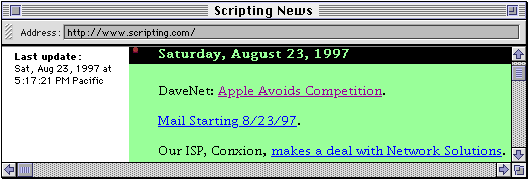

| TOP | UP: Applied Frontier | NEXT: Reference |
Since Frontier generates Web sites from database objects, and since UserTalk scripts can automate the generation and modification of database objects, it makes sense to use Frontier to manage Web sites whose content is to be generated or modified automatically. Such Web sites may be described as dynamic: the site is "live" in some way, changing over time, so that readers see different content on different occasions when they browse the site over the Web.
Frontier comes with some suites that illustrate and implement dynamic Web sites; they are the subject of this chapter.
If you take a look at http://www.scripting.com in your browser, you see a News Page in operation: Scripting News. An excerpt is shown in Figure 42-1. Over the course of each day, as Dave Winer browses the Web, he sees pages that he thinks his readers might be interested in, and compiles links to these. He also writes DaveNet essays, and makes links to them. He also transforms email comments from readers of earlier DaveNet essays into Web pages, and generates links to these.
|
 |
The newsPage suite provides a neatly packaged, simplified version of the scripts used to generate Scripting News. It can be used as is, modified to suit your needs, or just studied as a model of basic dynamic Web site generation technique. The basic interface is entirely through menu items in the NewsPage menu that appears when you choose News Page from the Suites menu. The menu items create and maintain a Web site table at user.newsPage , and then release it as desired. Of course, it is also possible for the user to customize features of the site table (for example, you might want to change the template); you can get there quickly with the Edit Web Site menu item.
The best way to get to know the newsPage suite is to experiment by adding something to each of the pages and then releasing the whole site; you will see immediately how it is structured.
To get started with the newsPage suite, choose Setup from the NewsPage menu. Specify the folder on disk to which the site table will be rendered, and the URL that the site will have when it is served up over the Net; these values will be copied into user.newsPage.#ftpSite automatically.
The site table has four page objects, all outlines:
(Or whatever the default page name is for your server, according to user.html.prefs.defaultFileName.) Links to remote pages you've discovered while surfing the Web with your browser.
Links to received email messages that have been transformed into Web pages.
Links to files which are downloadable from your Web site.
A "free" page, for you to customize as desired, perhaps to link to other parts of a larger site in which the News Page site is embedded.
The pages all have a "diary" structure: a date, followed by all links created on that date. They will be rendered with the renderer at user.newsPage. tools.defaultRenderer, which turns level 1 lines into <h4> and everything else to an ordinary <p> paragraph.
Here is how to add to the default page. While browsing the Web, when a Web page to which you want to add a link is frontmost in your browser, switch to Frontier and choose News Page from the Add To submenu of the NewsPage menu. After you've done this a couple of times, user.newsPage.default will look something like this:
#title user.name + "'s News Page"
Sun, 24 Aug, 1997
The <a href="http://info.ox.ac.uk/~classics/">Classics at Oxford</a> page.
The <a href="http://promo.net/pg/">PROJECT GUTENBERG INDEX</a> page.
You are expected to edit this so that each line becomes a more meaningful comment about the link.
On to email. When an email message is frontmost in Eudora, you add it and a link to it to your site by switching to Frontier and choosing Mail Page from the Add To submenu. The email message becomes a Web page in the table user.newsPage.messages; a link to it appears in user.newsPage.mail. That link is a reference to a glossary item in user.newsPage.glossary whose value will be something like this:
[[#glossPatch Msg0001|messages/Msg0001|]]
This will cause the link in the rendered version of user.newsPage.mail to emanate from the phrase "Msg0001", which is probably not what you want; to fix this, edit the glossary entry's value to something more edifying, such as this:
[[#glossPatch An Interesting Comment|messages/Msg0001|]]
Be sure that #autoParagraphs is true or the messages themselves will render poorly.
Finally, downloads. In the Finder, put a file or files into a folder. Now, in Frontier, choose Downloads Page from the Add To menu, and when the dialog appears, find and choose that folder. The folder is stuffed and BinHexed into the downloads folder of your Web site folder (the .hqx file is not kept in the database),1 and a link to it is added to user.newsPage.downloads; you should then edit that line into something meaningful.
Whenever you want to render parts of the site table, choose the appropriate menu item from the Build submenu of the NewsPage menu.
The News Page makes a nice introduction to the concept of dynamic Web sites. The management of the site table and its contents is very largely taken care of automatically through a small number of menu items, which is remarkable and convenient. But in a sense we are still building the site by hand: making links one at a time, editing them ourselves, and rendering and uploading the site in the normal way.
But now let's crank the "dynamic" concept up a notch. Why should we ever put our hands directly on the Web site? The site could just regenerate itself periodically without human intervention. And why should we bother to upload the site? We could just set Frontier going on the same machine that holds the Web server, and let it generate the site in place. But if we do that, how will we communicate with the site? With CGIs, of course.
The classAds suite demonstrates these concepts. It is to be used on a Web server machine, where Frontier is acting as a CGI application. It constructs and manages a Web site, which we will call the ClassAds site; this can be a subfolder of a larger Web site. The ClassAds site accepts and displays classified advertisements submitted by readers, by way of a browser, over the Web. You can use the suite as is, customize it, or adapt it as a model for any site where users are to be permitted to publish feedback.
The classAds suite combines three major Frontier facilities:
The Web site is stored as a site table in the database, and rendered from there to disk.
Frontier is commanded remotely by way of a browser to make the modifications that will cause the site's content to change.
This causes the site to be re-rendered periodically.
The ClassAds site contains four types of pages:
This functions as a front page; users come here, read about your classified ads system, and see links to the other pages.
A "free" page, for description of and links to the rest of your site as a whole.
Also called "category pages." There are as many pages as desired, each corresponding to a category which you have predetermined. Readers can come here to read the advertisements in a particular category.
This is the page where the user fills out and submits a new advertisement. Submitting an ad causes a CGI script to return a page showing how the published ad will look, and giving the user an opportunity to edit the ad again, or publish it; publishing the ad causes another CGI script to run, such that when the site is next rendered automatically, the advertisement will be in the correct Web page.
The manual management of the site is performed on the server machine, through menu items in the ClassAds menu, which appears when you choose ClassAds from the Suites menu. Begin by choosing Setup; in the dialog, enter the pathname of the folder from which the ClassAds site will be served, and the URL of that folder. It is crucial that the URL be correct, since it will be used in constructing the POST action for forms, so that they are submitted to our CGI scripts. If you find you have made a mistake, choose Start Over to destroy everything that Setup creates, and begin again.
When you click OK in the Setup dialog, a table user.classAds is created, containing the following entries:
An outline of summit-level entries stating the categories for the advertisements. You should edit this immediately to specify the categories you want; choose Open Categories to reach it easily.
ads, dirtycats, prefs, serialnum
Used internally by the classAds suite; you should not modify any of these directly. Once a few ads have been created, you might wish to look inside ads to understand how information about each one is maintained. The only thing here that might need configuring is user.classAds.prefs.hoursTillArchive , which determines at what age an ad will be removed from its page; set this by choosing Aging.
The Web site table.
Four templates which determine the look of different Web pages the reader will see. These are not templates in the formal sense of a #template; they are text material into which other text material will be embedded in the course of constructing the HTML. You can easily open most of these for editing by way of the items in the Templates submenu. They are listed here, along with the site's true #template:
For Each Ad - user.classAds.templates.singleAd
Every ad, within its page, is formatted as a table; this is the table. You are free to customize its look. There are seven pseudo-tags for which text will be substituted: <adnum>, <category>, <posttime>, <headline>, <text>, <mailaddress>, and <url>. The first two may perhaps be omitted, but the others are information submitted by the user as part of the ad and need to appear somewhere.
For Preview Page - user.classAds.templates.previewPage
This is the complete HTML for the page that the user will see after submitting an ad with the New Ad form; it gives the user a chance to edit the ad some more, or to submit it finally. The <form> tag is generated by a macro; the content of the ad is communicated to the CGI script by way of hidden input items whose values are filled in by pseudo-tag substitution. The chief pseudo-tag you'll be concerned with is <adtext>, which is the ad as formatted with singleAd, just as it will look within its category page.
For Cat Page - user.classAds.templates.catPage
This is the content for each page of advertisements. There are two pseudo-tags: <category>, and <adtext> which is where all the advertisements for that category will be put, as formatted with singleAd.
For Web Page - user.classAds.website.#template
A true template, used for every Web page object: the default page, the "About This Server" page, the advertisement (category) pages, and the New Ad form.
user.classAds.templates.newPageReturn
(There is no menu item for reaching this page.) This is the complete HTML for the page that the user will see after clicking the Submit button in the preview page. There is one pseudo-tag, <url>; this will be replaced by the value of #ftpsite.url.
You may wish to customize any or all of the templates. The easiest thing at first, though, is probably to leave all the templates alone.
Now choose Build Website, and the site will be rendered to disk. Test it as you would any CGI; get your Web server running, go to another computer and start up a browser, and ask for the URL that you gave in the Setup dialog. Navigate among the pages. Create a few ads; they normally won't appear on the site until it is automatically rebuilt on the hour, but you can give Frontier a nudge on the server machine by choosing Build Website again.
At some point, on the server machine, choose Set Archives Folder from the Archives submenu. When an ad has been displayed for the number of days listed in the Aging dialog, the ad table comprising its details is exported to this folder and then deleted from the database; this causes the ad to be henceforth absent from its Web page, yet retrievable from disk if necessary.
You can easily use the classAds suite without reading any further; these details are only for those who want to understand better how the suite works, or are thinking of using it as a model for a different kind of site.
There are only two CGI scripts in webserverScripts.classAds: when the user submits the form in newAd.html, it goes to previewAd() which makes and returns the preview page that is returned; and when the user submits the form in that page, it goes to addAd() which makes and returns a page based on user.classAds.templates.newPageReturn. Everything else is served from files on disk, so the reader receives pages as speedily as the Web server can provide them.
When the user submits an ad, no attempt is made to render the category page at that time. The details of the ad are stored in an "ad table," a subtable of the table corresponding to the name of the category inside user.classAds.ads. Only when the hour comes around does Frontier actually render any pages; and, to ensure maximum speed, the only thing it renders is those category pages for which the ad content has changed since the last rendering (it keeps track of these in user.classAds.dirtyCats).
The real work is done by scripts in suites.classAds. Even the CGI scripts call scripts here; this makes for a nicely modularized organization. The shell script for the hourly rendering is classAds.hourlyTask(); it archives and deletes any expired ad tables, and then, for each page whose ad content has changed, calls classAds.buildCatPage() to render it. This is where we see how clever the system of ad tables and templates is. For each page, buildCatPage() has only to cycle through the ad tables, constructing the HTML for each ad with classAds.getAdHTML() and the singleAd template; embed that accumulated HTML into the catPage template; slot the result into the Web site table as a wptext Web page object; and render that object in the ordinary way.
UserLand distributes various additional suites that can add different sorts of dynamism to your Web site.2
A particularly powerful extension of the dynamic Web site concept is Content Server, which can be downloaded from UserLand's site.3 This allows multiple Web page authors to upload material to a server machine via email, FTP, and/or Web page forms; Frontier automatically retrieves this material and transforms it into actual live Web pages.
| TOP | UP: Applied Frontier | NEXT: Reference |